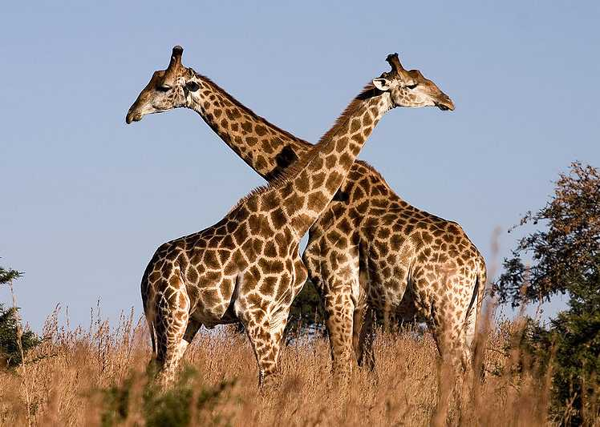

Жирафы - единственные животные, которые не умеют зевать. Практически все теплокровные и хладнокровные
периодически распахивают пасть в попытке насытиться кислородом - этим грешат птицы, рыбы и млекопитающие.
Среднестатистический человек зевает за свою жизнь около 250 тысяч раз. Но жираф не таков. Он за всю жизнь не
зевает ни разу. По крайней мере, за всю историю наблюдений за жирафами ученым не удалось застать за этим
занятием ни одного длинношеего.

Зато жирафы умеют мычать, шипеть, рычать и свистеть. Весь этот набор звуков они используют для общения с сородичами.
Длина языка жирафа составляет около 50 сантиметров.
Помимо выдающейся шеи и языка, жирафы обгоняют всех остальных млекопитающих по длине хвоста – он может достигать длины 2,5 метра.
Жирафы любят сырой лук.
Древние греки и римляне считали, что жираф - это плод страстной любви леопарда и верблюда.
Трепетное сердце жирафа бьется 170 раз в минуту.
Мамы юных жирафов часто организуют детский сад: одна взрослая самка остается смотреть за детенышами, а все остальные дружной толпой
идут добывать еду.
Несмотря на огромную длину, шея жирафа на самом деле слишком коротка для того, чтобы он мог дотянуться
до земли. Поэтому, чтобы поднять что-нибудь с пола, им приходится вставать на колени или широко расставлять
передние ноги. Так что если напугать жирафа, он физически не сможет повести себя, как страус.
Единственные хищники, которые осмеливаются охотиться на жирафов - львы. Впрочем, у жирафов есть отличное
оружие, которым они пользуются, защищая свое потомство - копыта.
Язык жирафа черного цвета.
В отличие от человека, жирафы умеют отдыхать стоя. Обычно сеанс сна на ногах длится не больше 5 минут.
Но когда жирафу необходимо хорошенько выспаться, он ложится на землю, поджимает под себя передние ноги,
загибает голову назад и кладет ее на крестец. При этом общая продолжительность сна за сутки у жирафов редко
превышает 60 минут.
От 16 до 20 часов день жирафы посвящают такому увлекательному занятию, как еда. Таким образом, они поглощают
огромное количество еды, хотя взрослой особи жирафа вполне хватило бы шести килограммов в день.
Через час после рождения детеныш жирафа начинает ходить.
Возраст жирафа можно определить по цвету пятен на шкуре - чем они темнее, тем старше особь.
Рисунок на шкуре жирафа уникален, как отпечатки пальца у людей.